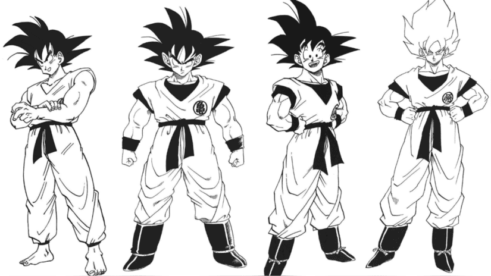
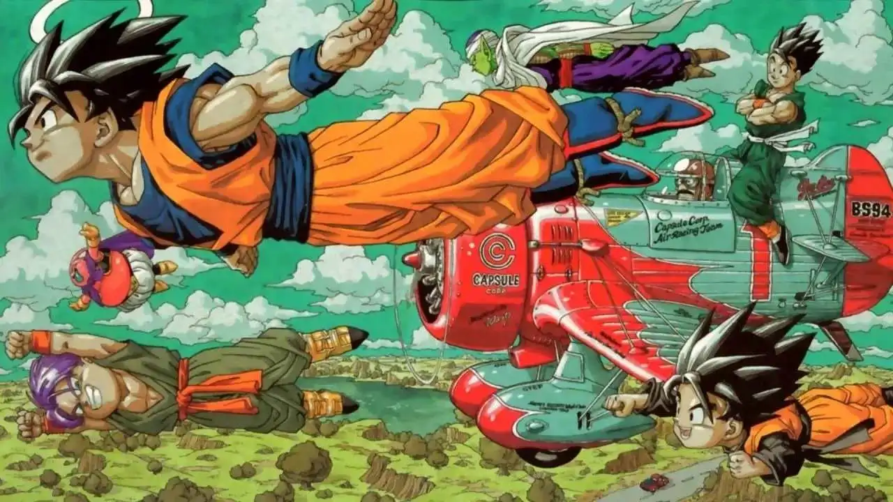
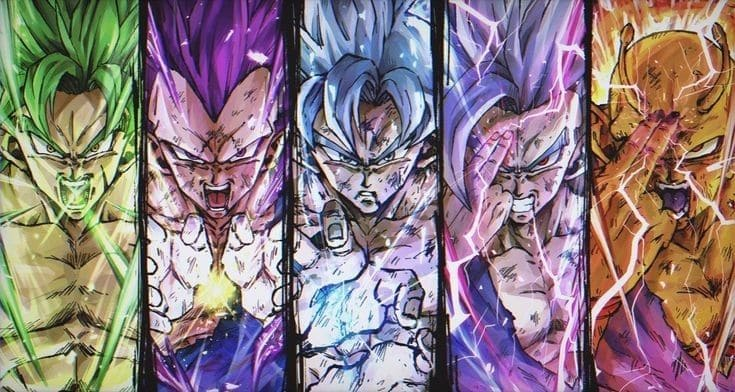

El Origen de Dragon Ball
Dragon Ball, la famosa franquicia creada por Akira Toriyama, comenzó como un manga publicado en la revista Weekly Shonen Jump en 1984. La obra se inspiró en la novela china clásica Viaje al Oeste, con una historia centrada en un joven guerrero llamado Goku que busca las Esferas del Dragón objetos mágicos con el poder de conceder deseos. En los primeros capítulos, Goku es un niño con una fuerza sobrehumana y un carácter inocente, mientras que Bulma, una joven científica, se convierte en su primera amiga y compañera de aventuras.
El manga de Dragon Ball rápidamente ganó popularidad y fue adaptado en un anime que debutó en Japón en 1986. La serie de televisión se dividió en dos partes:Dragon Ball, que cubre la infancia de Goku, y Dragon Ball Z, que empieza cuando Goku ya es adulto y se adentra en batallas más intensas contra poderosos enemigos. Esta expansión hizo que la serie alcanzara una notoriedad internacional sin precedentes, convirtiéndose en un ícono cultural a nivel mundial.
Evolución de Dragon Ball
La serie Dragon Ball evolucionó significativamente a lo largo de los años, abarcando diferentes sagas, personajes y transformaciones. En sus primeras etapas, la trama giraba principalmente en torno a las aventuras de Goku y sus amigos mientras recolectaban las Esferas del Dragón. Sin embargo, con el paso del tiempo, la historia se enfocó más en intensas batallas y la introducción de nuevos personajes y amenazas.
Una de las etapas más emblemáticas de la franquicia fue Dragon Ball Z, que profundizó en las batallas épicas entre los personajes y la llegada de los Saiyajin, una raza guerrera extraterrestre de la cual Goku es un miembro. Entre los villanos más memorables de esta saga se encuentran Freezer, el villano galáctico responsable de la destrucción del planeta Vegeta, y Majin Buu, un antiguo ser maligno que amenaza con destruir la Tierra. La aparición de la transformación en Super Saiyajin, un poder oculto de los guerreros Saiyajin, marcó un punto de inflexión en la serie y se convirtió en uno de los momentos más icónicos de la historia del anime.
Impacto Cultural
Dragon Ball se ha convertido en una de las franquicias de anime más exitosas y queridas del mundo. Su popularidad ha trascendido generaciones, con miles de fans que siguen la serie desde su infancia hasta la adultez. La serie ha influido no solo en la industria del anime, sino también en la cultura popular en general, con numerosos productos derivados, películas, videojuegos, cómics y merchandise.
La introducción de personajes carismáticos, como Goku, Vegeta, Piccolo y Gohan, junto con sus transformaciones y luchas por la supervivencia, han convertido a Dragon Ball en un referente dentro de la cultura del anime. Además, sus lecciones sobre la perseverancia, la amistad y el sacrificio han tocado los corazones de millones de personas alrededor del mundo, lo que sigue siendo una parte importante del atractivo de la franquicia.
Dragon Ball en la Actualidad
A pesar de su comienzo en los años 80,Dragon Ball sigue siendo una franquicia activa en la actualidad. En 2015, se lanzó la serie Dragon Ball Super, que continuó la historia después de los eventos de Dragon Ball Z, presentando nuevos villanos, personajes y arcos narrativos. Dragon Ball Super introdujo nuevas transformaciones, como el Super Saiyajin Dios y elUltra Instinto, que han continuado la evolución de los personajes y las batallas en la serie.
La franquicia también ha mantenido su relevancia a través de diversas películas, especialmente con el éxito de Dragon Ball Super: Broly(2018), que fue un éxito tanto de crítica como de taquilla. A día de hoy, Dragon Ball sigue siendo una de las franquicias más rentables del mundo, con una base de fans leal y una influencia que se mantiene sólida en la cultura popular global.